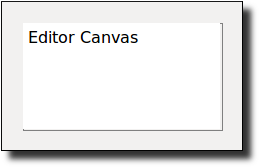

constructor
(new editor-canvas% [parent parent] [ [editor editor] [style style] [scrolls-per-page scrolls-per-page] [label label] [wheel-step wheel-step] [line-count line-count] [horizontal-inset horizontal-inset] [vertical-inset vertical-inset] [enabled enabled] [vert-margin vert-margin] [horiz-margin horiz-margin] [min-width min-width] [min-height min-height] [stretchable-width stretchable-width] [stretchable-height stretchable-height]]) → (is-a?/c editor-canvas%)
parent :
(or/c (is-a?/c frame%) (is-a?/c dialog%) (is-a?/c panel%) (is-a?/c pane%))
editor : (or/c (or/c (is-a?/c text%) (is-a?/c pasteboard%)) #f) = #f
style :
(listof (or/c 'no-border 'control-border 'combo 'no-hscroll 'no-vscroll 'hide-hscroll 'hide-vscroll 'auto-vscroll 'auto-hscroll 'resize-corner 'no-focus 'deleted 'transparent)) = null scrolls-per-page : (integer-in 1 10000) = 100 label : (or/c label-string? #f) = #f wheel-step : (or/c (integer-in 1 10000) #f) = 3 line-count : (or/c (integer-in 1 1000) #f) = #f horizontal-inset : spacing-integer? = 5 vertical-inset : spacing-integer? = 5 enabled : any/c = #t vert-margin : spacing-integer? = 0 horiz-margin : spacing-integer? = 0 min-width : (or/c dimension-integer? #f) = #f min-height : (or/c dimension-integer? #f) = #f stretchable-width : any/c = #t stretchable-height : any/c = #t
style 列表可以包含以下标志:
'no-border —
省略画布周围的边界 'control-border —
给予画布一个边界,就像一个 text-field% 的控件 'combo —
给予画布一个组合按钮,就像一个 combo-field% 的控件; 这个样式旨在与 'control-border, 'hide-hscroll 和 'hide-vscroll 'no-hscroll —
不允许水平滚动并隐藏水平滚动条 'no-vscroll —
不允许垂直滚动并隐藏垂直滚动条 'hide-hscroll —
允许水平滚动,但隐藏水平滚动条 'hide-vscroll —
允许垂直滚动,但隐藏垂直滚动条 'auto-hscroll —
在不需要时自动隐藏水平滚动条 (除非指定 'no-hscroll 或 'hide-hscroll ) 'auto-vscroll —
在不需要的时候自动隐藏垂直滚动条 (除非指定 'no-vscroll 或 'hide-vscroll ) 'resize-corner —
当只有一个滚动条可见时,在画布的右下方为调整大小的控件留下空间 'no-focus —
防止画布在被点击或调用 focus 方法时接受键盘焦点 'deleted —
创建的画布最初是隐藏的,不影响 parent 的几何形状; 画布可以通过调用 parent 的 add-child 方法在以后激活 'transparent —
画布在使用其父窗口的背景进行更新之前被 "擦除"; 关于 'transparent 和屏幕外缓冲的交互信息,请参见 canvas<%>
文本编辑器的垂直滚动是基于线条的,而水平滚动和粘贴板的垂直滚动是基于每个水平页面的固定步数的。 scrolls-per-page 参数设置了这个值。
如果 提供的话, wheel-step 参数将被传递给 wheel-step 方法。 默认的滚动步数可以通过 'GRacket:wheelStep preference 偏好来全局覆盖;见 首选项 。
如果 line-count 不是 #f, 它将被传递给 set-line-count 方法。
如果 horizontal-inset 不是 5, 它将被传递给 horizontal-inset 方法。 同样地,如果 vertical-inset 不是 5, 它将被传递给 vertical-inset 方法。
关于 enabled 参数的信息,请参见 window<%> 。 关于 horiz-margin 和 vert-margin 参数的信息,请参见 subarea<%> 。 关于 min-width, min-height, stretchable-width 和 stretchable-height 参数的信息,请参见 area<%> 。
method
(send an-editor-canvas allow-scroll-to-last) → boolean?
(send an-editor-canvas allow-scroll-to-last on?) → void? on? : any/c
method
(send an-editor-canvas allow-tab-exit) → boolean?
(send an-editor-canvas allow-tab-exit on?) → void? on? : any/c
当编辑画布启用 tab-exit 时, Tab 和 Enter 键盘事件被框架的默认 on-traverse-char 方法消耗; 此外,对话框的默认方法也消耗 Escape 键事件。 否则, on-traverse-char 允许键盘事件被传播到画布上。
method
(send an-editor-canvas call-as-primary-owner f) → any
f : (-> any)
method
(send an-editor-canvas force-display-focus) → boolean?
(send an-editor-canvas force-display-focus on?) → void? on? : any/c
method
(send an-editor-canvas get-editor)
→ (or/c (or/c (is-a?/c text%) (is-a?/c pasteboard%)) #f)
method
(send an-editor-canvas get-line-count)
→ (or/c (integer-in 1 1000) #f)
method
(send an-editor-canvas get-scroll-via-copy) → boolean?
参见 on-scroll-to 和 after-scroll-to 。
method
(send an-editor-canvas horizontal-inset)
→ (integer-in 1 10000) (send an-editor-canvas horizontal-inset step) → void? step : (integer-in 1 10000)
method
(send an-editor-canvas lazy-refresh) → boolean?
(send an-editor-canvas lazy-refresh on?) → void? on? : any/c
method
event : (is-a?/c key-event%)
参见 get-editor 。
method
event : (is-a?/c mouse-event%)
参见 get-editor 。
这个方法在清除编辑器周围的空白后被调用,除非画布是用 'transparent 风格创建的,但编辑器区域不会被自动清除。 换句话说, editor-canvas% 的更新默认与 canvas% 的更新一样, 都是采用 'no-autoclear 的风格,只不过编辑区周围的空白总是被清除。
method
(send an-editor-canvas on-size width height) → void? width : dimension-integer? height : dimension-integer?
method
(send an-editor-canvas scroll-to localx localy w h refresh? [ bias]) → boolean? localx : real? localy : real? w : (and/c real? (not/c negative?)) h : (and/c real? (not/c negative?)) refresh? : any/c bias : (or/c 'start 'end 'none) = 'none
localx, localy, w 和 h 参数指定了要通过滚动使之可见的编辑器区域(以编辑器坐标为单位)。
如果 refresh? 不是 #f, 那么编辑器在成功滚动后会立即更新。
'start —
如果范围不适合在可见区域内,显示左上角的区域 'none —
没有特殊的滚动指令 'end —
如果范围不适合在可见区域内,显示右下角区域
如果 display 被滚动,返回值是 #t , 如果没有(因为请求的区域已经可见,因为 display 的尺寸为零,或者因为编辑器当前正在打印), 返回值是 #f 。
method
(send an-editor-canvas scroll-with-bottom-base) → boolean?
(send an-editor-canvas scroll-with-bottom-base on?) → void? on? : any/c
method
(send an-editor-canvas set-editor edit [ redraw?]) → void? edit : (or/c (or/c (is-a?/c text%) (is-a?/c pasteboard%)) #f) redraw? : any/c = #t
如果 redraw? 是 #f, 那么编辑器不会被立即绘制; 在这种情况下,必须在稍后强制进行重绘(例如,调用 on-paint 方法)。
如果画布用 set-line-count 安装了行数,画布的最小高度会被调整。
method
(send an-editor-canvas set-line-count count) → void?
count : (or/c (integer-in 1 1000) #f)
如果行数被设置为 #f, 那么画布的图形最小高度就会恢复到原来的值。
method
(send an-editor-canvas set-scroll-via-copy scroll-via-copy?)
→ void? scroll-via-copy? : any/c
method
(send an-editor-canvas vertical-inset) → (integer-in 1 10000)
(send an-editor-canvas vertical-inset step) → void? step : (integer-in 1 10000)
method
(send an-editor-canvas wheel-step)
→ (or/c (integer-in 1 10000) #f) (send an-editor-canvas wheel-step step) → void? step : (or/c (integer-in 1 10000) #f)